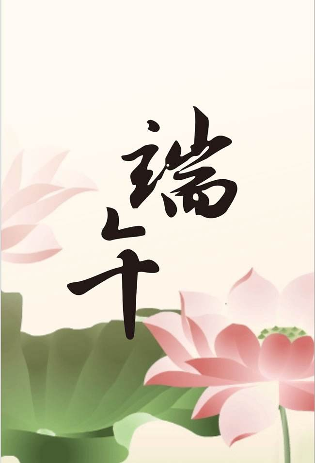

端午节（英文为Dragon Boat Festival或Double Fifth Festival）又称为端阳节，为每年的农历5月初五日，在湖北、湖南、贵州、四川一带，端午节又分为大端午与小端午。小端午为每年农历五月初五，大端午为每年农历五月十五日。时至今日，端午节在中国人民中仍是一个十分盛行的隆重节日。国家非常重视非物质文化遗产的保护，2006年5月20日，该民俗经国务院批准列入第一批国家级非物质文化遗产名录。
2009年9月30日在阿联酋首都阿布扎比召开的联合国教科文组织保护非物质文化遗产政府间委员会会议决定：中国端午节成功入选《世界人类非物质文化遗产代表作名录》。端午节起源于中国，最初是中国人民祛病防疫的节日，吴越之地春秋之前有在农历五月初五以龙舟竞渡形式举行部落图腾祭祀的习俗；后因诗人屈原在这一天死去，便成了中国人民纪念屈原的传统节日；部分地区也有纪念伍子胥、曹娥等说法。